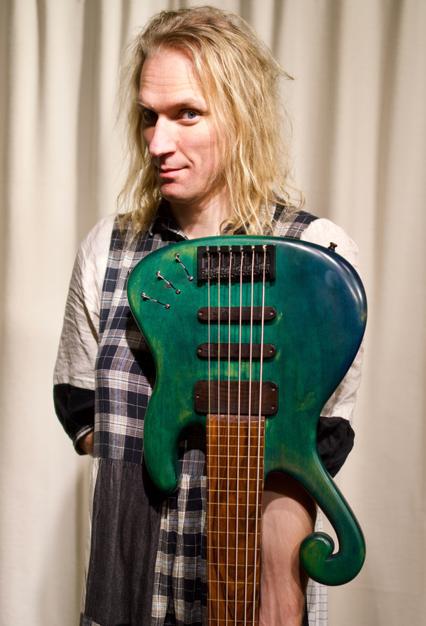

MUSIKER
ANDREYA
EK FRISK
Firma: Soft Animal Productions
Musiker, kompositör, musikproducent och ljudtekniker. Spelar bas, gitarr, m.m; skriver musik på kommission och till egna projekt; producerar, mixar och mastrar inspelad musik samt är ljudtekniker på konserter och liknande.